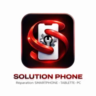

Identifier le Galaxy
La référence exacte évite de commander un écran incompatible avec votre téléphone.

03 85 33 06 89Vitre fissurée, affichage noir, lignes colorées ou tactile qui ne répond plus : indiquez le modèle exact pour vérifier la pièce et obtenir votre tarif avant intervention.
La référence exacte évite de commander un écran incompatible avec votre téléphone.
Nous distinguons une vitre fissurée d’un défaut d’image ou de tactile.
La pièce, son prix et le délai sont annoncés avant votre accord.
Les gammes Galaxy S, Galaxy A, Galaxy Z et Galaxy Note comprennent de nombreuses références. Deux modèles proches peuvent utiliser des écrans différents. La référence visible dans les réglages, sur la boîte ou sur la facture permet de préparer un devis fiable.
Précisez si l’écran affiche encore une image, si le tactile répond et si des lignes ou des taches sont apparues après le choc. Selon le modèle et la disponibilité, l’équipe vous présente la solution adaptée et confirme le prix avant toute réparation.
Trois réparateurs dans une équipe de cinq personnes. Réparations garanties 6 mois.
Envoyez la référence du modèle et, si possible, une photo de l’écran pour vérifier la pièce disponible.
Le prix dépend de la référence exacte du Galaxy et de la pièce disponible. L’équipe confirme le tarif avant intervention après identification du modèle.
Oui. Pour éviter un déplacement inutile, contactez l’atelier avec la référence exacte afin de vérifier la disponibilité de la pièce.
Le remplacement d’écran ne nécessite normalement pas d’effacer les données. Une sauvegarde récente reste recommandée.
La référence se trouve dans les réglages, sur la boîte ou sur la facture. Elle permet de distinguer des modèles d’apparence proche.